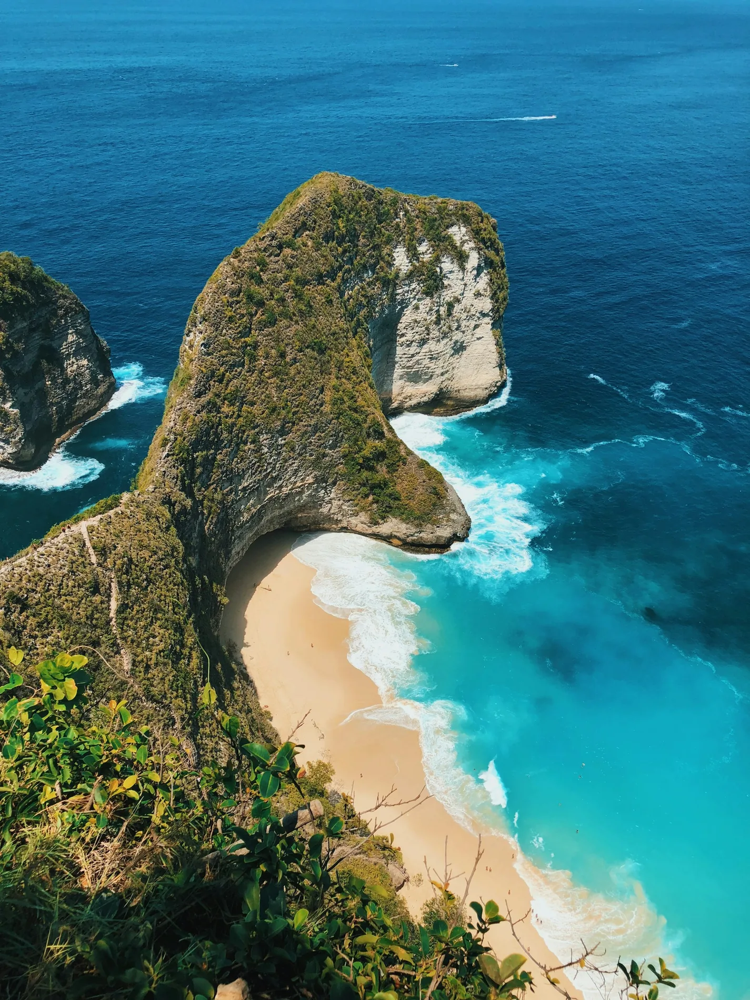
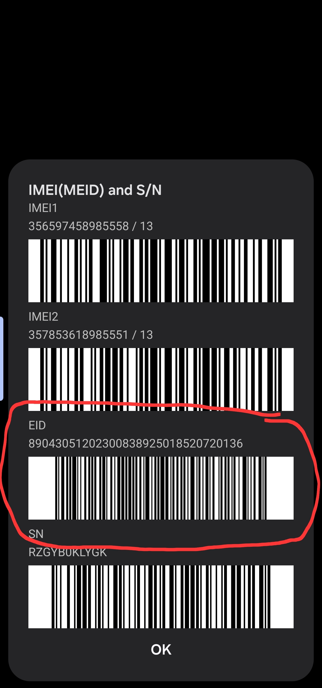
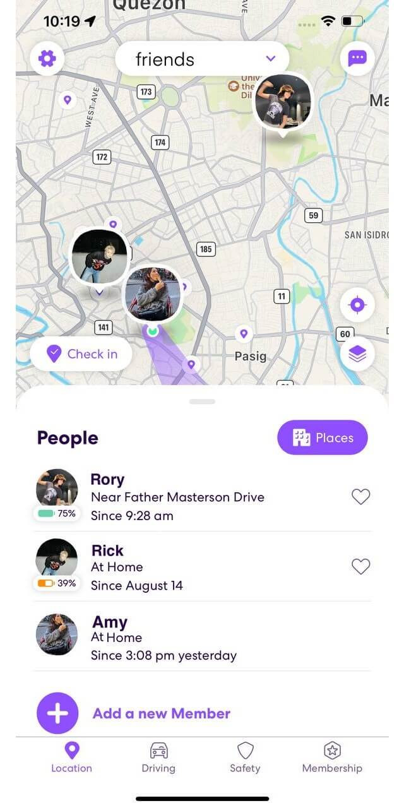
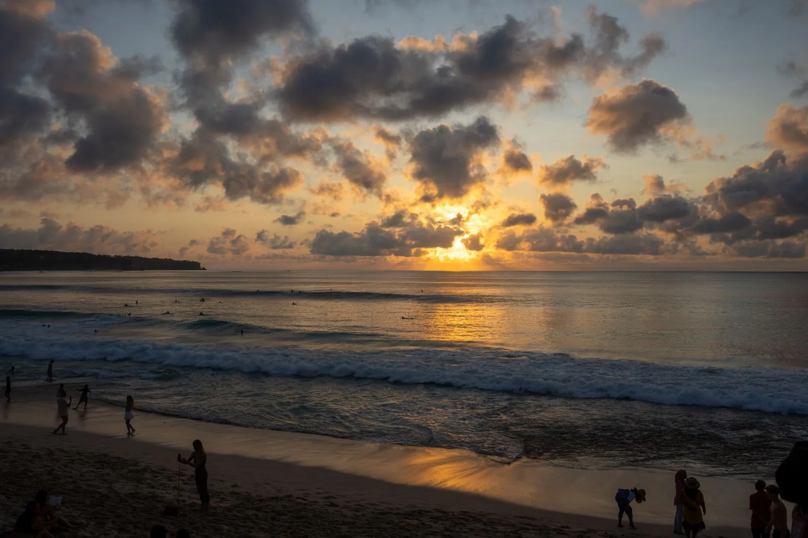
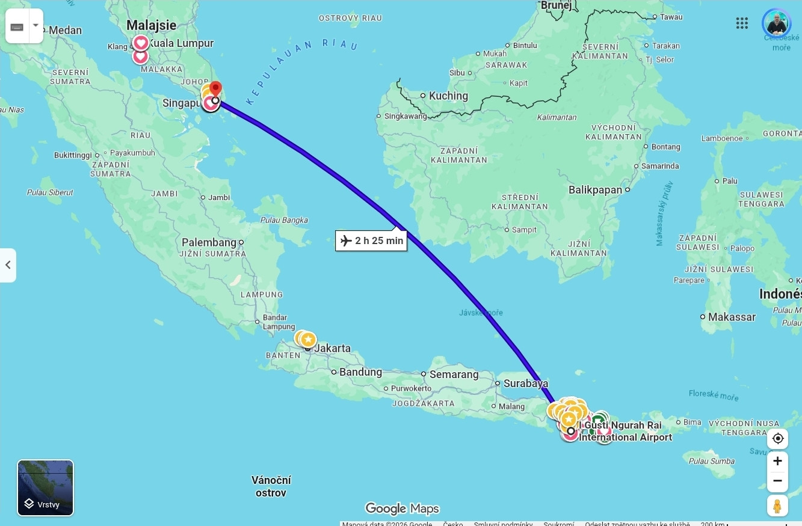

Thajsko · TDAC
Před cestou ověřit aktuální vstupní podmínky.
Oficiální portál TDACVarianta B – Bangkok. Kompletní orientační rozpočet najdeš ve finančním dashboardu.

Bangkok · Bali · Lombok
6.—25. srpna 2027 · Společně na druhý konec světa
Z pulzujícího Bangkoku k balijským chrámům a rýžovým terasám. Přes zelené vnitrozemí až na pláže Lomboku. Tady začíná naše společné dobrodružství.
„Města, chrámy, sopky a oceán. Různé světy, stejná vášeň pro cestování.“
 02 / OSTROV BOHŮBaliChrámy, rýžová pole a ostrovní život.
02 / OSTROV BOHŮBaliChrámy, rýžová pole a ostrovní život.
 03 / OSTROVNÍ KLIDLombokMoře, příroda a čas zpomalit.
03 / OSTROVNÍ KLIDLombokMoře, příroda a čas zpomalit.
Fotografie destinací jsou ilustrační. Konkrétní program, hotely a ceny najdeš v jednotlivých kapitolách níže.
6. 8. 2027: PRG 19:15 → BKK 15:25 (7. 8.), 15 h 10 min, jeden přestup.
25. 8. 2027: BKK 06:55 → PRG 18:20, 16 h 25 min, jeden přestup.
19 163 Kč / osoba9. 8. 2027: DMK 11:55 → DPS 17:15.
24. 8. 2027: DPS 18:15 → DMK 21:35.
Přímé lety, 4 h 20 min.
7 745 Kč / osobaCelkem 26 908 Kč / osoba. Nabídky, nikoli potvrzené rezervace.
Co je potřeba vyřídit předem: víza a portály, zdraví a SOS kontakty, eSIM, dopravní aplikace, sdílení polohy a balení.
Před cestou ověřit aktuální vstupní podmínky.
Oficiální portál TDACTuristické vízum B1 (500 000 IDR / cca 605 Kč).
Poplatek 150 000 IDR (cca 180 Kč) na ochranu přírody.
Bezplatný celní formulář (vyplnit 2 dny před příletem na Bali).
Pro nejlepší signál, maximální rychlost a bezkonkurenční cenu zvolíme nabídku od operátora Singtel.
Než eSIM zakoupíš, ujisti se, že tvůj mobilní telefon technologii eSIM podporuje a není blokovaný na jednoho operátora. Kdo podporu v telefonu nemá, budeme to muset vyřešit na letišti v Singapuru po příletu.
*#06#.👉 Na displeji se ti musí zobrazit řetězec označený jako EID (viz ukázka vpravo).

Nezbytná digitální výbava pro pohodlný pohyb po Asii bez starostí a předražených poplatků.
Naprosto nejdůležitější aplikace pro Asii. Slouží k objednávání aut s předem danou fixní cenou.
Asijská obdoba Grabu, skvělá jako záloha a pro bleskové propletení kolon na skútru.
Mapy celé Asie, které fungují na 100 % i tehdy, když nemáš data ani signál.
Abychom se na letištích, v chaotických uličkách Singapuru nebo na skútrech na Bali a Lomboku nikdy neztratili.
🤗 Kdo se nebude chtít připojit, samozřejmě nemusí, je to zcela dobrovolné! 😊
📲 Před odletem (ideálně den předem) si zájemci nainstalují do telefonu aplikaci Life360. Já (Radek) založím naši společnou cestovní skupinu a pošlu vám sem nebo přes WhatsApp pozvánkový odkaz.
Díky tomu se budeme všichni vzájemně vidět na jedné mapě. Kdyby se kdokoli z nás při toulkách městem nebo na plážích zpozdil, zapomněl odbočit na skútru nebo se nedej bože ztratil, bleskově ho podle GPS polohy v aplikaci najdeme. 🗺️✨
🔒 Zásada soukromí: Aplikaci používáme čistě po dobu dovolené. Jakmile se vrátíme domů do ČR, jednoduše v nastavení opustíte skupinu (nebo aplikaci odinstalujete) a sdílení polohy se tím nadobro zruší.

Kompletní seznam vybavení s průběžným sčítáním gramáže pro let do SE Asie
Bangkok → Bali (Uluwatu, Ubud) → Lombok → zpět na Bali → tranzit v Bangkoku. Etapy (kruhy) a přesuny (čárkované) jsou v pořadí, v jakém je zažijete.
Na cestu vyrážíme ze dvou míst – z Liberce a z Hodkovic nad Mohelkou. Není nutné, aby se všichni nejprve scházeli v Liberci. Jednotlivé posádky se domluví na odjezdu ze svého místa tak, abychom se všichni potkali na letišti Václava Havla v Praze v --:-- (3 hodiny před odletem · Terminál 1 (mimo Schengen)). Orientační čas odjezdu pro skupinu z Liberce je --:--; odjezd z Hodkovic se stanoví samostatně podle zvolené trasy a dopravní situace.
Doporučujeme společnou dopravu osobními auty a rozdělení účastníků do posádek podle místa bydliště. Hlavní výhoda se ukáže po návratu: po dlouhém letu budeme pravděpodobně unavení a další cesta autobusy, přestupy a čekání na spoje do Liberce či Hodkovic by byla zbytečně náročná. Auty se dostaneme pohodlněji přímo domů, bez přenášení zavazadel mezi spoji. Před cestou si domluvíme řidiče, počet aut i dlouhodobé parkování u letiště; po příletu musí řídit ten, kdo je dostatečně odpočatý. Pokud by nikdo nebyl způsobilý k bezpečné jízdě, zvolíme odpočinek nebo odvoz.
📍 Časy odjezdu jsou orientační. Konkrétní trasy, posádky a parkování doladíme před odletem.19:15 Praha → 15:25 Bangkok BKK následující den. Jeden přestup.
Hotel zatím nevybrán. Odhad 700 Kč za dvoulůžkový pokoj a noc, celkem 1 400 Kč za dvě noci.
7. 8. přílet, ubytování a večerní procházka.
8. 8. Královský palác, Wat Pho, Wat Arun a Chinatown.
9. 8. ranní přesun na Don Mueang.
DMK 11:55 → DPS 17:15. Přímý let 4 h 20 min.
Na jihu Bali míříme k vápencovým útesům Uluwatu. Pod nimi leží pláže, nad nimi chrám a večerní představení Kecak.
Cena pronájmu na 7 dní + pojištění motorky (bez eSIM a IDP)
Pokud si motorky půjčíme zde, přivezou nám je přímo na letiště a vracet je budeme v přístavu Sanur. Tímto způsobem ušetříme spoustu času, cestu na letiště i následné drahé taxi do přístavu Sanur. Držák na telefon a sanitované helmy jsou zcela zdarma.
Vápencové útesy nad Indickým oceánem, starověký chrám Uluwatu s opičkami a tancem Kecak a slavné pláže Padang Padang a Bingin.
Tropická vila u Uluwatu s terasou, výhledem na zeleň a bazén a snídaní pro pohodový začátek dne.
Podklady z potvrzení Booking.com. Ceny v Kč jsou orientační; storno lhůty platí podle místního času ubytování.
Odpočinek v Uluwatu: pokoje Deluxe s vlastní vířivkou a balkonem, ideální po výletech k útesům.
Podklady z potvrzení Booking.com. Ceny v Kč jsou orientační; storno lhůty platí podle místního času ubytování.
Intenzivní poznávací itinerář (1x večer + 1x celý den): Útesy, jeskyně, skalní kaňony, monumentální park GWK a chrám Uluwatu.
Po ubytování v Uluwatu Jungle Villa vyrážíme rovnou na útes za prvním nekomerčním západem slunce.
Nádherná přírodní vyhlídka na otevřené travnaté ploše přímo nad kolmými útesy spadajícími do oceánu. Výborné místo bez davů.
Intenzivní celodenní program od skalní jeskyně až po večerní ohňový tanec Kecak.
Sestup přes úzkou skalní rozsedlinu do impozantní jeskyně pod útesem s přístupem na písčité pobřeží při odlivu.
Ikonický fotospot. Dramatická skalní stěna kolmo padající do oceánu s úchvatným panoramatickým výhledem.
Unikátní průjezd po asfaltce zaříznuté přímo mezi dvěma vysokými vápencovými skalami dolů k pobřeží.
Monumentální park se 120m vysokou sochou boha Višnua na Garudovi tyčící se nad skalním amfiteátrem.
Chrám na 70m útesu a amfiteátr s tradičním ohňovým tancem Kecak při západu slunce nad oceánem.
Z pobřeží zamíříme mezi rýžové terasy. Z Ubudu budeme vyrážet k vodopádům, pramenům a do Opičího pralesa.
Smaragdově zelené rýžové terasy Tegalalang, vodopády v džungli (Kanto Lampo, Tibumana), posvátné prameny Tirta Empul a Opičí prales.
Klidnější ubytování v Ubudu se zahradou, bazénovým výhledem a prostornými postelemi.
Podklady z potvrzení Booking.com. Ceny v Kč jsou orientační; storno lhůty platí podle místního času ubytování.
Zelená atmosféra Ubudu a vlastní terasa jako příjemné zázemí po objevování rýžových teras.
Podklady z potvrzení Booking.com. Ceny v Kč jsou orientační; storno lhůty platí podle místního času ubytování.
Soukromá apartmá orientovaná k bazénu, s terasou, posezením a pohodlím pro několikadenní pobyt.
Podklady z potvrzení Booking.com. Ceny v Kč jsou orientační; storno lhůty platí podle místního času ubytování.
Pobyt na 4 noci v Bije Suite Villa Ubud: Rýžové terasy, vodopády, skleněný most, opičí prales, posvátné prameny a kávové plantáže.
Příjezd kolem poledne, ubytování ve vile, odpolední procházka posvátným lesem plným opic a večerní centrum.
Přírodní pralesní rezervace s historickými chrámy a stovkami volně žijících makaků přímo v centru Ubudu.
Tradiční architektura paláce Puri Saren Ubud, tržnice s řemeslnými výrobky a večerní atmosféra města.
Výlet za vodopády v džungli, posvátnými prameny a po proskleném mostě nad údolím řeky Petanu. Zastávky přizpůsobíme času a dopravě.
Ikonický stupňovitý vodopád v kaňonu. Voda stéká přímo po členitých skalách, kde se lze postavit přímo pod vodopád.
Starobylý balijský hinduistický chrám s posvátnými prameny, kde probíhá tradiční očistná koupel Melukat.
Procházka po proskleném mostě nad údolím řeky Petanu u Blangsinga/Kemenuh. Panoramatické výhledy do tropické zeleně a výjimečné místo pro fotografie. Zastávka se hodí při výletu za vodopády v okolí Ubudu.
📍 Lokalita: Kemenuh, Sukawati, Gianyar · 🎟️ Vstupné: podle aktuálního ceníku na místě; zatím není započteno do rozpočtu.
Ranní procházka smaragdovými terasami, degustace kávy Luwak nad kaňonem a odpolední pohodový relax u bazénu ve vile.
Světoznámé terasovité rýžové půdorysy v údolí s kaskádovým zavlažovacím systémem Subak.
Tradiční zpracování cibetkové kávy (Kopi Luwak), degustace vzorků zdarma a vyhlídková terasa nad kaňonem.
Ikonické vyhlídkové místo s kaskádami rýžových polí, kavárnou a odpočinkovými zónami v údolí.
Slavné obří houpačky (Bali Swings), skleněné terasy a fotogenické instalace přímo nad džunglí.
🚢 B (Doporučeno – Rychloloď Starfish): Odjezd ve 13:00 z přístavu Sanur ➔ příjezd v 15:00 do přístavu Bangsal na Lomboku (2 hodiny plavby na moři). Cena: jen 1 343 Kč / osoba (2 686 Kč / pár obousměrně).
✈️ A (Přelet TransNusa): Odlet ve 12:40 DPS ➔ přílet ve 13:20 LOP. Cena: 2 240 Kč / osoba (4 480 Kč / pár).
Na Lomboku se cesta stáčí k moři. Na výletech lodí kolem ostrůvků Gili nás čeká šnorchlování nad korálovými útesy.
Korálové útesy, mořské želvy a výlety lodičkou po ostrůvcích Gili s průzračnou vodou.
Doporučení na základě recenzí, přímé kontakty a taktika hromadné slevy
Níže najdete interaktivní mapu a katalog ověřených půjčoven v okruhu do 1 km od přístavu Bangsal. Barevně zvýrazněné karty představují naše top doporučení. Kliknutím na libovolnou kartu otevřete její přesnou polohu na Google mapách.
Dvě soukromé vily se dvěma ložnicemi a vlastním bazénem — prostor na odpočinek u pobřeží Sekotongu.
Podklady z potvrzení Booking.com. Ceny v Kč jsou orientační; storno lhůty platí podle místního času ubytování.
Poklidný Tanjung se zahradním výhledem a terasou, dobrá základna pro severní Lombok.
Podklady z potvrzení Booking.com. Ceny v Kč jsou orientační; storno lhůty platí podle místního času ubytování.
Pobyt na 4 noci v Mina Tanjung Hotel: Privátní plavba se skleněným dnem kolem Gili, vodopády pod sopkou Rinjani, vyhlídky & mořský chrám.
Příjezd lodí do přístavu Bangsal/Teluk Nare, krátký přejezd do hotelu Mina Tanjung, ubytování a odpolední relax u bazénu a západ slunce z pláže rezortu.
Soukromá loď se skleněným dnem (cca 800 000 – 1 200 000 IDR / 960 – 1 440 Kč za skupinu): podvodní sochy NEST, šnorchlování s želvami, oběd na Gili Trawangan a relax na Gili Air.
Slavné kruhové podvodní sochy od Jasona deCaires Taylora a blízké útesy s volně plávajícími mořskými želvami.
Celodenní výlet na sever k úpatí sopky Rinjani: mohutný vodopád Sendang Gile, trek džunglí k Tiu Kelep a tradiční architektura vesnice Senaru.
První velkolepý dvoustupňový vodopád stékající z masivu sopky Rinjani obklopený hustou tropickou vegetací.
Autentická starobylá sasacká vesnice s tradičními bambusovými obydlími, slaměnými střechami a zachovalým způsobem života.
Průsmyk vnitrozemím s divokými opicemi, ikonická panoramatická vyhlídka na útesu s výhledem na ostrovy Gili a západ slunce u mořského chrámu Batu Bolong.
Scénická horská silnice obklopená džunglí, kde podél cesty odpočívají a pobíhají skupiny volně žijících opic.
Ikonický skalní ostroh s panoramou pobřeží, tyrkysových zátok a všech tří ostrovů Gili seřazených na horizontu.
Mystický mořský hinduistický chrám stojící na černé skalní zátoce s přirozeným skalním oknem omývaným vlnami.
Ranní check-out z Mina Tanjung Hotelu a scénický přejezd autem směrem na jihoindonéské surfové pláže a ikonické zátoky v okolí Kuta Lombok.
Na jihu se střídají zátoky Tanjung Aan a Selong Belanak. Na večer si necháme výhled z Bukit Merese.
Tyrkysové zátoky Tanjung Aan, panoramatický útes Bukit Merese se západem slunce, surfařská zátoka Selong Belanak a divoké pláže.
Stylové pokoje s terasou pro pobyt v oblasti Kuta Lombok, s klimatizací a pohodlným zázemím.
Podklady z potvrzení Booking.com. Ceny v Kč jsou orientační; storno lhůty platí podle místního času ubytování.
Samostatné vily v zeleném prostředí Are Guling s výhledy na kopce i bazén.
Podklady z potvrzení Booking.com. Ceny v Kč jsou orientační; storno lhůty platí podle místního času ubytování.
Pobyt na 4 noci v TheLocal AreGuling HOMESTAY: Okruh Moto GP, podzemní jeskyně Goa Bangkang, kultura kmenu Sasak, Růžová pláž & vyhlášené útesy.
Scénický přejezd ze severu napříč ostrovem na jih do ubytování TheLocal AreGuling HOMESTAY, odpolední relax v zátoce Are Guling a podvečerní západ slunce z útesu Bukit Merese.
Ikonický travnatý útes nad oceánem s nejznámějším západem slunce na jihu Lomboku a panoramatickým výhledem.
Návštěva nového okruhu Moto GP v Kutě, mystické podzemní jeskyně s netopýry a odpolední výlet na východ k Růžové pláži a útesy Tanjung Ringgit.
Moderní mezinárodní závodní okruh Pertamina Mandalika Circuit situovaný přímo u mořského pobřeží v Kutě.
Mystická podzemní jeskyně se stovkami netopýrů, kde stropním otvorem procházejí dramatické světelné kužely.
Unikátní pláž na východním cípu Lomboku s jemným růžovým pískem tvořeným drcenými červenými korály.
Majestátní kolmé skalní útesy spadající do tyrkysového oceánu s výhledem na ostrov Sumbawa.
Poznání původní kultury kmenu Sasak ve vesnici Sade, oběd u tyrkysové zátoky Tanjung Aan a odpolední divoké útesy Mawi.
Autentická vesnice původních obyvatel Lomboku s tradičními obydlími ze slámy, bambusu a jílu.
Široká tyrkysová zátoka s ikonickým pískem ve tvaru kuliček peppercorn, ideální ke koupání a obědu v warungách.
Dramatické skalní útvary na západním pobřeží se silným vlnobitím a fotogenickou sopečnou kulisou.
Plně odpočinkový den bez plánování: pohoda u bazénu v TheLocal AreGuling HOMESTAY, masáže v Kuta Lombok, kavárny nebo libovolné toulání v okolí.
Ranní check-out v homestayi, přejezd autem napříč Lombokem do přístavu na severu (Bangsal / Teluk Nare) a odplutí rychlolodí zpět na Bali.
Ve 13:30 odplutí lodí Wahana Virendra zpět na Bali (příjezd do přístavu Sanur v 17:00). Krátký transfer do hotelu u letiště v Denpasaru.

Po návratu z Lomboku strávíme poslední noc na Bali blízko letiště. Ráno nás čeká let do Singapuru.
Závěrečné rozloučení s Asií. Ubytujeme se těsně u letiště v Denpasaru, abychom se před ranním odletem zcela vyhnuli dopravním zácpám.
Pohodlné zakončení cesty v Kutě s klimatizovanými pokoji a snídaní před odletem.
Podklady z potvrzení Booking.com. Ceny v Kč jsou orientační; storno lhůty platí podle místního času ubytování.
Jednoduché a cenově dostupné ubytování v Kutě na poslední noc, s terasou a snídaní.
Podklady z potvrzení Booking.com. Ceny v Kč jsou orientační; storno lhůty platí podle místního času ubytování.
Příjemná zahradní atmosféra na poslední noc v Kutě, s balkonem a výhledem k bazénu.
Podklady z potvrzení Booking.com. Ceny v Kč jsou orientační; storno lhůty platí podle místního času ubytování.
1 noc v Bakung Beach Resort (Kuta): Západ slunce & mořské plody v Jimbaranu, balijská masáž a odlet zpět do ČR.

DPS 18:15 → DMK 21:35. Poté vyzvednutí zavazadel a přejezd na BKK. Samostatné letenky, rezerva 9 h 20 min mezi příletem a odletem.
Trasa mezi letištiBKK 06:55 → PRG 18:20. Jeden přestup.
Přistáváme v Praze v --:--. Všichni cestujeme pouze s kabinovým batohem do 7 kg, bez odbavených zavazadel, takže po výstupu z letadla a příslušných kontrolách nemusíme čekat u zavazadlových pásů. Z letiště vyrazíme rovnou k předem zaparkovaným autům a jednotlivé posádky pojedou přímo domů do Liberce nebo Hodkovic nad Mohelkou, bez přestupů v centru Prahy. Pro orientaci počítáme s příjezdem kolem --:--; skutečný čas závisí na výstupu z letadla, kontrolách, cestě k autům a dopravě. Po dlouhém letu musí řídit pouze odpočatý řidič; v případě únavy raději odpočinek nebo zajištěný odvoz.
📍 Orientační čas příjezdu, nikoli závazný plán. Domluvíme posádky, parkování a bezpečný odvoz po letu.Postupně zvolíš lety a hotely v itineráři, tady nastavíš jídlo, aktivity a hotovost. Na konci tě čeká kompletní finanční dashboard se srovnáním s CK SEN.
Vyber styl stravování pro celou cestu. Cena se okamžitě projeví v hlavním rozpočtu i v plánu hotovosti.
Volba se přepočítá v celé stránce: v rozpisu nákladů (součet vč. jídla) i v Plánu hotovosti. Snídaně jsou v ceně hotelů, proto se počítá jen oběd, večeře, pití a svačiny.
Procházej zážitky po destinacích, vyber jen to, co opravdu chceš navštívit. Ceny i hotovost se průběžně přepočítávají.
Částky jsou na 1 osobu. Povinné položky (jízdné v Singapuru, poslední hotel) jsou zaškrtnuté vždy a nejdou vypnout. Všechno ostatní je ve výchozím stavu odškrtnuté, zaškrtni si, co chceš navštívit. Položky označené 💡 jsou tipy z okolí navštívených míst. Ceny jsou z veřejných přehledů z roku 2026, označení „odhad“ znamená, že cena je jen orientační. Do srpna 2027 se mohou posunout.
V této kategorii nemáš nic vybráno. Vypni filtr „Ukázat jen vybrané“.
BTS, MRT, lodě a taxi. Platby a jízdné ověřit podle konkrétní trasy.
Thajské bahty a indonéské rupie. Částky budou doplněny po výběru hotelu.
Orientační ceny za osobu při sdílení pokoje. Bangkok 700 Kč/pokoj/noc. Výchozí volba: úsporné hotely, pohodové stravování.
Vyber hotely v jednotlivých etapách:
Volitelné aktivity (odhad na osobu):
| Položka | Osoba | Pár | Sólo |
|---|
Ceny stravy na Bali a Lomboku podle původní kalkulace: 115/340/950 tis. IDR denně × 16 dní. Bangkok odhad 150/350/900 Kč denně × 2,75 dne. Doprava v Bangkoku je odhad. Pojištění a osobní nákupy nejsou zahrnuty.
Praktické fráze v interaktivních překlápěcích kartách s výslovností.
Poslední průchod všemi body před schůzkou.
Stáhne jeden soubor .ics se všemi 11 termíny a připomínkami. Otevři ho v Kalendáři, Google Kalendáři nebo Outlooku a potvrď import.
Všechno na jednom místě a nic dvakrát: nahoře úkoly s termínem (zaškrtni hotové, termíny si přidáš do kalendáře), dole rozhodnutí a pravidla, která si odsouhlasíme na schůzce.
Zatím nic nebylo probráno.
12 fotografií ze Singapuru, Bali a Lomboku · losuje se z 30 míst